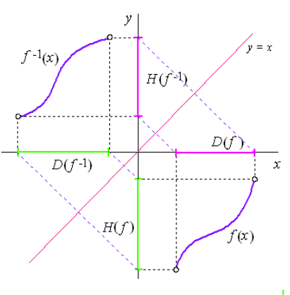
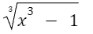
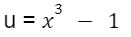
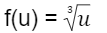
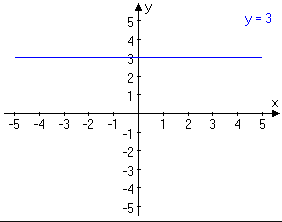

Elektronická učebnica matematiky
Elektronická učebnica matematiky
-
Funkcie
-
Kombinatorika
-
Pravdepodobnosť
-
Štatistika

Typy funkcií
Prostá funkcia
- funkcia f na množine A práve vtedy, keď p∀x1, x2∈A, kde
x1≠ x2, sa f(x1) ≠ f(x2)
- ak je funkcia rastúca alebo klesajúca je prostá
- ak je neklesajúca alebo nerastúca alebo monotónna tak nie je prostá
Párna funkcia
- párna je práve vtedy, keď ku každému x∈D(f) existuje -x∈D(f) tak, že f(-x) = f(x) (napríkald y = -7x² + 21)
- graf je súmerný podľa súradnicovej osi y
Nepárna funkcia
- nepárna je práve vtedy, keď ku každému x∈D(f) existuje -x∈D(f) tak, že f(-x) = -f(x) (napríklad y = x²)
- graf je súmerný podľa začiatku súradnicovej sústavy
Ohraničená funkcia
- ohraničená je práve vtedy, ak je ohraničená zhora aj zdola
- zdola platí: ak existuje také číslo d∈R, že pre ∀x∈A je f(x) ≥ d
- zhora platí: ak existuje také číslo h∈R, že pre ∀x∈A je f(x) ≤ h
Inverzná funkcia
- funkcia f je prostá na celom D(f) a H(f) je jej obor hodnôt, tak sa dá na H(f) definovať funkcia, ktorá každému y∈H(f) priraďuje práve to číslo x∈D(f), pre ktoré sa f(x) = y
- pre tieto funkcie platí D(f) SEM DOPLNIT
- grafy inverznej funkcie sú súmerné podľa priamky p: y = x
- inverznú funkciu k funkcii f, označujeme sem doplnit

Zložená funkcia
- funkcia f je zložená, ak ju môžeme zapísať v tvare h(x) = f(g(x)) pre ∀ x∈D(h)
- funkciu g(x) = u nazývame vnútorná zložka
- funkciu f(u) nazývame vonkajšia zložka zloženej funkcie u
- zložená funckia 
- vnútoná zložka 
- vonkajšia zložka 
Konštantná funkcia
- Konštantná funkcia je každá funkcia určená predpisom y = b , kde b Î R
Grafom každej konštantnej funkcie f ak D(f) = R je priamka .
Vlastnosti funkcie :
D(f) = R , H(f) = b
- nie je prostá
- je ohraničená
- v každom bode x Î R má maximum aj minimum
